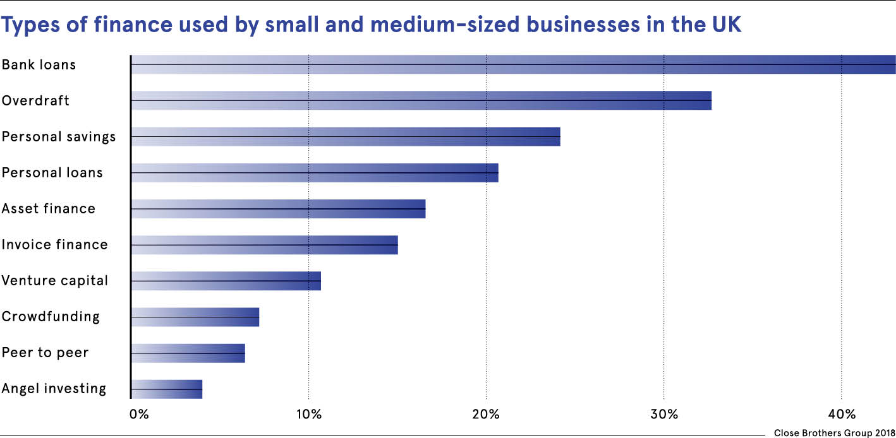

Fintech is giving small businesses access to finance
raconteur.net02 May 2018
Cut off from finance by big lenders, financial technology platforms are coming to the rescue for cash-starved small businesses

For swashbuckling entrepreneurs Beth Jones and Gareth Noble, financial technology has played a crucial role in their firm’s exponential growth. The co-founders of Pirate’s Grog Rum started their boutique spirits business less than four years ago and have already built revenue to £400,000.
Two loans from peer-to-peer lending site Funding Circle, for £5,000 and £30,000, were pivotal in supporting this expansion. Ms Jones says they had taken small loans from their high street bank before, but the bank caps the credit available to them, limiting their options.
“Plus there is much more paperwork and hassle, for example, needing face-to-face meetings at our branch an hour’s drive away,” she says. “Funding Circle was so much easier and gave us what we needed, all online. In fact, we arranged the latest loan while on holiday in India. It is a great relief to know it is there to ease cash flow when we need to restock at busy times.
“We have grown 100 per cent every year and are on track to make £800,000 next year. We couldn’t have done that without the loans. Traditional banks are archaic and need to speed up, otherwise newer banks will scoop up their customers.”
Financial technology (fintech) is helping small companies in many ways, from innovative accounting software to financial management, insurance and business valuation services.
A recent report by Business Insider Intelligence says financial services providers have underserved small businesses because they make less revenue than larger firms. But fintech providers are finding ways to serve even the smallest businesses profitably.
Susanne Chishti, chief executive of funding group Fintech Circle, says these new tools will help entrepreneurs spend much more time growing their businesses, rather than being bogged down with financial issues. With emerging technologies, such as big data, artificial intelligence and biometrics, the potential is almost limitless.
One of the most profound changes is in banking for small businesses, especially since the Competition Market Authority’s revolutionary open banking rules came into force in January. These aim to ensure that the UK’s nine biggest banks share their data more easily with other firms and that fintech startups therefore have fair access to customers.
Before open banking, if a new fintech firm wanted to work with a bank to develop solutions, they had several time-consuming and challenging hoops to jump through, such as gaining agreements from procurement teams. But with open banking, they can use interfaces known as APIs to do this much more simply and quickly. APIs can also enable them to build new applications on to existing products, thereby capitalising on existing customer bases.
Ms Chishti says this will shift control from big banks to fintechs and empower small-business customers. So will new fintechs hurt banks? There has been a perception that large banks would eventually suffer “death by a thousand cuts” as they were gradually replaced by numerous fintech apps, says Ms Chishti. But that has been superseded by increased co-operation between the two. Instead of crossing cutlasses, banks and fintechs will trade data for ideas and innovation with the aim of improving products for small businesses.
Fintech solutions, such as Funding Circle, are already having a big impact on financial inclusion by providing a small-business lending platform that bypasses traditional banks. Since setting up in 2010, it has lent £5 billion to businesses globally, creating 100,000 jobs directly and indirectly.
Independent research by Cebr economics consultancy found that 21 per cent of borrowers on this platform believed they could not have secured finance elsewhere. Funding Circle says many of these are profitable businesses, but “asset light”, and traditional banks only lend to companies with security.
James Meekings, UK managing director and co-founder of Funding Circle, says the platform was founded as a response to banks avoiding small-business lending after the financial crisis. “Ten years on, creditworthy businesses still struggle with this broken system, missing growth opportunities despite their importance to the UK economy,” he says.
“We created an infrastructure where any investor, big or small, can lend to small businesses. Today, our broad community of investors has helped 45,000 businesses across the UK, United States and Europe access the finance they need to grow.”
There are pitfalls and challenges with fintech. According to the World Bank Group, these include data privacy as customers increasingly share their data in return for personalised services, whether investors in peer-to-peer lending are fully aware of the risks, and whether fintechs have enough supervisory capacity to understand and monitor new applications.
Aaron Hughes, managing director of Equiniti Riskfactor, which offers tech-based risk management solutions to traditional banks, challenger banks and fintech startups, says: “Fintechs improve customer engagement. But they don’t necessarily have the skills, resources and process to make proper lending decisions.
“This can lead to disappointment because they cannot validate the loan, process delays or to poor loan decisions. Traditional banks have the skills and resources to support the approval process. But they lack the money to invest in technology as they are still rebuilding their balance sheets. So they will partner with fintechs.”
Simon Paris, deputy chief executive of , the world’s third-largest fintech firm, says that whatever the challenges, banks need to raise their game because as digital services grow, so will small-business expectations of fast, simple, tailored and joined-up services.
“For example, these customers won’t just apply for a loan, but will be guided seamlessly to other relevant services, such as business credit cards, liquidity solutions, commercial mortgages or even business opportunities,” he says.
The ability to leverage data could also mean swifter access to capital and greater insight into their finances, adds Mr Paris. And it will open access to financial management tools and apps, for example, which can support cash-flow management. This will provide much-needed transparency, helping them to make better business decisions and ultimately improve financial inclusion for small businesses.